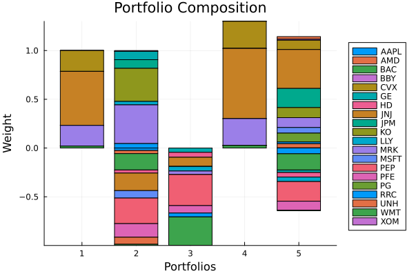
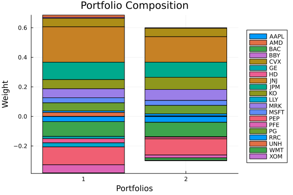

The source files can be found in examples/.
Budget constraints
This example shows how to use basic budget constraints.
Before starting it is worth mentioning that portfolio budget constraints are implemented on the actual weights, while the short budget constraints are implemented on a relaxation variable stand-in for the short weights. This means that in some cases, it may appear the short budget constraints are not satisfied when they actually are. This is because the relaxation variables that stand in for the short weights can take on a range of values as long as they are greater than or equal to the absolute value of the actual negative weights, and still satisfy the budget constraint placed on them.
using PortfolioOptimisers, PrettyTables# Format for pretty tables.tsfmt = (v, i, j) -> begin if j == 1 return Date(v) else return v endend;resfmt = (v, i, j) -> begin if j == 1 return v else return isa(v, Number) ? "$(round(v*100, digits=3)) %" : v endend;mipresfmt = (v, i, j) -> begin if j ∈ (1, 2, 3) return v else return isa(v, Number) ? "$(round(v*100, digits=3)) %" : v endend;1. ReturnsResult data
We will use the same data as the previous example.
using CSV, TimeSeries, DataFramesX = TimeArray(CSV.File(joinpath(@__DIR__, "..", "SP500.csv.gz")); timestamp = :Date)[(end - 252):end]pretty_table(X[(end - 5):end]; formatters = [tsfmt])# Compute the returnsrd = prices_to_returns(X)ReturnsResult
nx ┼ 20-element Vector{String}
X ┼ 252×20 Matrix{Float64}
nf ┼ nothing
F ┼ nothing
nb ┼ nothing
B ┼ nothing
ts ┼ 252-element Vector{Date}
iv ┼ nothing
ivpa ┼ nothing
nz ┼ nothing
Z ┴ nothing
2. Preparatory steps
We'll provide a vector of continuous solvers because the optimisation type we'll be using is more complex, and will contain various constraints. We will also use a more exotic risk measure.
For the mixed integer solvers, we can use a single one.
using Clarabel, HiGHSslv = [Solver(; name = :clarabel1, solver = Clarabel.Optimizer, settings = Dict("verbose" => false), check_sol = (; allow_local = true, allow_almost = true)), Solver(; name = :clarabel3, solver = Clarabel.Optimizer, settings = Dict("verbose" => false, "max_step_fraction" => 0.9), check_sol = (; allow_local = true, allow_almost = true)), Solver(; name = :clarabel5, solver = Clarabel.Optimizer, settings = Dict("verbose" => false, "max_step_fraction" => 0.8), check_sol = (; allow_local = true, allow_almost = true)), Solver(; name = :clarabel7, solver = Clarabel.Optimizer, settings = Dict("verbose" => false, "max_step_fraction" => 0.70), check_sol = (; allow_local = true, allow_almost = true))];mip_slv = Solver(; name = :highs1, solver = HiGHS.Optimizer, settings = Dict("log_to_console" => false), check_sol = (; allow_local = true, allow_almost = true));This time we will use the EntropicValueatRisk measure and we will once again precompute prior.
r = EntropicValueatRisk()pr = prior(EmpiricalPrior(), rd)LowOrderPrior
X ┼ 252×20 Matrix{Float64}
o_X ┼ nothing
mu ┼ 20-element Vector{Float64}
sigma ┼ 20×20 Matrix{Float64}
chol ┼ nothing
w ┼ nothing
ens ┼ nothing
kld ┼ nothing
ow ┼ nothing
rr ┼ nothing
fpr ┼ nothing
Z ┴ nothing
3. Exact budget constraints
The budget is the value of the sum of a portfolio's weights.
Here we will showcase various budget constraints. We will start simple, with a strict budget constraint. We will also show the impact this has on the finite allocation.
3.1 Strict budget constraints
3.1.1 Fully invested long-only portfolio
First the default case, where the budget is equal to 1, bgt = 1. This means the portfolio will be fully invested.
opt1 = JuMPOptimiser(; pe = pr, slv = slv)mr1 = MeanRisk(; r = r, opt = opt1)MeanRisk
opt ┼ JuMPOptimiser
│ pe ┼ LowOrderPrior
│ │ X ┼ 252×20 Matrix{Float64}
│ │ o_X ┼ nothing
│ │ mu ┼ 20-element Vector{Float64}
│ │ sigma ┼ 20×20 Matrix{Float64}
│ │ chol ┼ nothing
│ │ w ┼ nothing
│ │ ens ┼ nothing
│ │ kld ┼ nothing
│ │ ow ┼ nothing
│ │ rr ┼ nothing
│ │ fpr ┼ nothing
│ │ Z ┴ nothing
│ slv ┼ 4-element Vector{Solver}
│ │ Solver ⋯
│ │ Solver ⋯
│ │ Solver ⋯
│ │ Solver ⋯
│ wb ┼ WeightBounds
│ │ lb ┼ Float64: 0.0
│ │ ub ┴ Float64: 1.0
│ bgt ┼ Float64: 1.0
│ sbgt ┼ nothing
│ gbgt ┼ nothing
│ xbgt ┼ Bool: false
│ lt ┼ nothing
│ st ┼ nothing
│ lcse ┼ nothing
│ cte ┼ nothing
│ gcarde ┼ nothing
│ sgcarde ┼ nothing
│ smtx ┼ nothing
│ sgmtx ┼ nothing
│ slt ┼ nothing
│ sst ┼ nothing
│ sglt ┼ nothing
│ sgst ┼ nothing
│ tn ┼ nothing
│ fees ┼ nothing
│ sets ┼ nothing
│ tr ┼ nothing
│ ple ┼ nothing
│ ret ┼ ArithmeticReturn
│ │ settings ┼ JuMPReturnsSettings
│ │ │ scale ┼ Float64: 1.0
│ │ │ lb ┼ nothing
│ │ │ rte ┼ Bool: true
│ │ │ fee ┼ Bool: true
│ │ │ mic ┴ Bool: true
│ │ ucs ┼ nothing
│ │ mu ┴ nothing
│ sca ┼ SumScalariser()
│ ccnt ┼ nothing
│ cobj ┼ nothing
│ sc ┼ Int64: 1
│ so ┼ Int64: 1
│ ss ┼ nothing
│ card ┼ nothing
│ scard ┼ nothing
│ l2c ┼ nothing
│ lpc ┼ nothing
│ linfc ┼ nothing
│ l1 ┼ nothing
│ l2 ┼ nothing
│ linf ┼ nothing
│ lp ┼ nothing
│ brt ┼ Bool: false
│ x_src ┼ Symbol: :prior
│ z_src ┼ Symbol: :data
│ strict ┴ Bool: false
r ┼ EntropicValueatRisk
│ settings ┼ RiskMeasureSettings
│ │ scale ┼ Float64: 1.0
│ │ ub ┼ nothing
│ │ rke ┴ Bool: true
│ slv ┼ nothing
│ alpha ┼ Float64: 0.05
│ w ┴ nothing
obj ┼ MinimumRisk()
wi ┼ nothing
fb ┴ nothing
You can see that wb is of type WeightBounds, lb = 0.0 (asset weights lower bound), and ub = 1.0 (asset weights upper bound), and bgt = 1.0 (budget).
We can check that the constraints were satisfied.
res1 = optimise(mr1)println("budget: $(sum(res1.w))")println("long budget: $(sum(res1.w[res1.w .>= zero(eltype(res1.w))]))")println("short budget: $(sum(res1.w[res1.w .< zero(eltype(res1.w))]))")println("weight bounds: $(all(x -> zero(x) <= x <= one(x), res1.w))")budget: 0.9999999998112568
long budget: 0.9999999998112568
short budget: 0.0
weight bounds: trueNow let's allocate a finite amount of capital, 4206.9, to this portfolio.
da = DiscreteAllocation(; slv = mip_slv)mip_res1 = optimise(da, FiniteAllocationInput(; w = res1.w, prices = vec(values(X[end])), cash = 4206.9))pretty_table(DataFrame(:assets => rd.nx, :shares => mip_res1.shares, :cost => mip_res1.cost, :opt_weights => res1.w, :mip_weights => mip_res1.w); formatters = [mipresfmt])println("long cost + short cost = cost = $(sum(mip_res1.cost))")println("long cost: $(sum(mip_res1.cost[mip_res1.cost .>= zero(eltype(mip_res1.cost))]))")println("short cost: $(sum(mip_res1.cost[mip_res1.cost .< zero(eltype(mip_res1.cost))]))")println("remaining cash: $(mip_res1.cash)")println("used cash ≈ available cash: $(isapprox(sum(mip_res1.cost) + mip_res1.cash, 4206.9 * sum(res1.w)))")┌────────┬─────────┬─────────┬─────────────┬─────────────┐
│ assets │ shares │ cost │ opt_weights │ mip_weights │
│ String │ Float64 │ Float64 │ Float64 │ Float64 │
├────────┼─────────┼─────────┼─────────────┼─────────────┤
│ AAPL │ 0.0 │ 0.0 │ 0.0 % │ 0.0 % │
│ AMD │ 0.0 │ 0.0 │ 0.0 % │ 0.0 % │
│ BAC │ 1.0 │ 32.301 │ 0.0 % │ 0.768 % │
│ BBY │ 0.0 │ 0.0 │ 0.0 % │ 0.0 % │
│ CVX │ 5.0 │ 868.64 │ 21.386 % │ 20.655 % │
│ GE │ 0.0 │ 0.0 │ 0.0 % │ 0.0 % │
│ HD │ 0.0 │ 0.0 │ 0.0 % │ 0.0 % │
│ JNJ │ 13.0 │ 2263.11 │ 55.414 % │ 53.815 % │
│ JPM │ 0.0 │ 0.0 │ 0.0 % │ 0.0 % │
│ KO │ 0.0 │ 0.0 │ 0.0 % │ 0.0 % │
│ LLY │ 0.0 │ 0.0 │ 0.0 % │ 0.0 % │
│ MRK │ 8.0 │ 876.648 │ 21.207 % │ 20.846 % │
│ MSFT │ 0.0 │ 0.0 │ 0.0 % │ 0.0 % │
│ PEP │ 0.0 │ 0.0 │ 0.0 % │ 0.0 % │
│ PFE │ 0.0 │ 0.0 │ 0.0 % │ 0.0 % │
│ PG │ 0.0 │ 0.0 │ 0.0 % │ 0.0 % │
│ RRC │ 1.0 │ 24.497 │ 0.0 % │ 0.583 % │
│ UNH │ 0.0 │ 0.0 │ 0.0 % │ 0.0 % │
│ WMT │ 1.0 │ 140.181 │ 1.993 % │ 3.333 % │
│ XOM │ 0.0 │ 0.0 │ 0.0 % │ 0.0 % │
└────────┴─────────┴─────────┴─────────────┴─────────────┘
long cost + short cost = cost = 4205.372
long cost: 4205.372
short cost: 0.0
remaining cash: 1.5279992059747372
used cash ≈ available cash: true3.1.2 Maximum risk-return ratio market neutral portfolio
We will now create a maximum risk-return ratio market neutral portfolio. For a market neutral portfolio, the weights must sum to zero, which means the budget is zero. This means the long and short budgets must be equal in magnitude but opposite sign. In order to avoid all zero weights, we need to set a non-zero short budget, and negative lower weight bounds.
The short budget is given as an absolute value (simplifies implementation details). The weight bounds can be negative. We will set the maximum weight bounds to ±1, the short budget to 1 (-1 in practice), and the portfolio budget to 0, therefore the long budget is 1.
Minimising the risk under without additional constraints often yields all zeros. So we will maximise the risk-return ratio.
rf = 4.2 / 100 / 252opt2 = JuMPOptimiser(; pe = pr, slv = slv, # Budget and short budget absolute values. bgt = 0, sbgt = 1, # Weight bounds. wb = WeightBounds(; lb = -1.0, ub = 1.0))mr2 = MeanRisk(; r = r, obj = MaximumRatio(; rf = rf), opt = opt2)res2 = optimise(mr2)println("budget: $(sum(res2.w))")println("long budget: $(sum(res2.w[res2.w .>= zero(eltype(res2.w))]))")println("short budget: $(sum(res2.w[res2.w .< zero(eltype(res2.w))]))")println("weight bounds: $(all(x -> -one(x) <= x <= one(x), res2.w))")budget: 1.9188440865126584e-16
long budget: 0.9999937734319414
short budget: -0.999993773431941
weight bounds: trueLet's allocate a finite amount of capital. Since we set the long and short budgets equal to 1, the cost of the long and short positions will be approximately equal to the allocated value of 4206.9, and the sum of the costs will be close to zero. The discrepancies are due to the fact that we are allocating a finite amount of capital.
The discrete allocation procedure automatically adjusts the cash amount depending on the optimal long and short weights, so there is no need to split the cash amount into long and short allocations.
mip_res2 = optimise(da, FiniteAllocationInput(; w = res2.w, prices = vec(values(X[end])), cash = 4206.9))pretty_table(DataFrame(:assets => rd.nx, :shares => mip_res2.shares, :cost => mip_res2.cost, :opt_weights => res2.w, :mip_weights => mip_res2.w); formatters = [mipresfmt])println("long cost + short cost = cost = $(sum(mip_res2.cost))")println("long cost: $(sum(mip_res2.cost[mip_res2.cost .>= zero(eltype(mip_res2.cost))]))")println("short cost: $(sum(mip_res2.cost[mip_res2.cost .< zero(eltype(mip_res2.cost))]))")println("remaining cash: $(mip_res2.cash)")println("used cash ≈ available cash: $(isapprox(sum(abs.(mip_res2.cost)) + mip_res2.cash, 4206.9 * sum(abs.(res2.w))))")┌────────┬─────────┬──────────┬─────────────┬─────────────┐
│ assets │ shares │ cost │ opt_weights │ mip_weights │
│ String │ Float64 │ Float64 │ Float64 │ Float64 │
├────────┼─────────┼──────────┼─────────────┼─────────────┤
│ AAPL │ -1.0 │ -125.674 │ -2.526 % │ -2.999 % │
│ AMD │ -2.0 │ -125.14 │ -3.226 % │ -2.986 % │
│ BAC │ -21.0 │ -678.321 │ -16.732 % │ -16.188 % │
│ BBY │ 1.0 │ 78.279 │ 0.837 % │ 1.857 % │
│ CVX │ 0.0 │ 0.0 │ 0.001 % │ 0.0 % │
│ GE │ 6.0 │ 383.298 │ 8.532 % │ 9.093 % │
│ HD │ 0.0 │ -0.0 │ -3.235 % │ -0.0 % │
│ JNJ │ -4.0 │ -696.34 │ -17.974 % │ -16.618 % │
│ JPM │ 3.0 │ 388.725 │ 8.859 % │ 9.222 % │
│ KO │ 23.0 │ 1440.01 │ 33.949 % │ 34.163 % │
│ LLY │ 0.0 │ 0.0 │ 3.535 % │ 0.0 % │
│ MRK │ 16.0 │ 1753.3 │ 39.716 % │ 41.595 % │
│ MSFT │ -1.0 │ -233.434 │ -7.632 % │ -5.571 % │
│ PEP │ -6.0 │ -1075.67 │ -26.22 % │ -25.671 % │
│ PFE │ -12.0 │ -591.0 │ -13.952 % │ -14.104 % │
│ PG │ 0.0 │ -0.0 │ -0.0 % │ -0.0 % │
│ RRC │ 7.0 │ 171.479 │ 4.572 % │ 4.068 % │
│ UNH │ -1.0 │ -524.422 │ -7.253 % │ -12.515 % │
│ WMT │ -1.0 │ -140.181 │ -1.248 % │ -3.345 % │
│ XOM │ 0.0 │ 0.0 │ 0.0 % │ 0.0 % │
└────────┴─────────┴──────────┴─────────────┴─────────────┘
long cost + short cost = cost = 24.904000000000252
long cost: 4215.084000000001
short cost: -4190.179999999999
remaining cash: 8.483610901683107
used cash ≈ available cash: true3.1.3 Short-only portfolio
We will now create and discretely allocate a short-only portfolio. This is in general an anti-pattern but one can use various combinations of budget, weight bounds and short budget constraints to create hedging portfolios.
opt3 = JuMPOptimiser(; pe = pr, slv = slv, # Budget and short budget absolute values. bgt = -1, sbgt = 1, # Weight bounds. wb = WeightBounds(; lb = -1.0, ub = 0.0))mr3 = MeanRisk(; r = r, obj = MinimumRisk(), opt = opt3)res3 = optimise(mr3)println("budget: $(sum(res3.w))")println("long budget: $(sum(res3.w[res3.w .>= zero(eltype(res3.w))]))")println("short budget: $(sum(res3.w[res3.w .< zero(eltype(res3.w))]))")println("weight bounds: $(all(x -> -one(x) <= x <= zero(x), res3.w))")budget: -0.9999999995925799
long budget: 0.0
short budget: -0.9999999995925799
weight bounds: trueWe can confirm that the finite allocation behaves as expected.
mip_res3 = optimise(da, FiniteAllocationInput(; w = res3.w, prices = vec(values(X[end])), cash = 4206.9))pretty_table(DataFrame(:assets => rd.nx, :shares => mip_res3.shares, :cost => mip_res3.cost, :opt_weights => res3.w, :mip_weights => mip_res3.w); formatters = [mipresfmt])println("long cost + short cost = cost = $(sum(mip_res3.cost))")println("long cost: $(sum(mip_res3.cost[mip_res3.cost .>= zero(eltype(mip_res3.cost))]))")println("short cost: $(sum(mip_res3.cost[mip_res3.cost .< zero(eltype(mip_res3.cost))]))")println("remaining cash: $(mip_res3.cash)")println("used cash ≈ available cash: $(isapprox(sum(mip_res3.cost) - mip_res3.cash, 4206.9 * sum(res3.w)))")┌────────┬─────────┬──────────┬─────────────┬─────────────┐
│ assets │ shares │ cost │ opt_weights │ mip_weights │
│ String │ Float64 │ Float64 │ Float64 │ Float64 │
├────────┼─────────┼──────────┼─────────────┼─────────────┤
│ AAPL │ 0.0 │ -0.0 │ -0.0 % │ -0.0 % │
│ AMD │ 0.0 │ -0.0 │ -0.0 % │ -0.0 % │
│ BAC │ -1.0 │ -32.301 │ -0.0 % │ -0.768 % │
│ BBY │ 0.0 │ -0.0 │ -0.0 % │ -0.0 % │
│ CVX │ 0.0 │ -0.0 │ -0.0 % │ -0.0 % │
│ GE │ -3.0 │ -191.649 │ -4.403 % │ -4.558 % │
│ HD │ -1.0 │ -311.22 │ -5.068 % │ -7.401 % │
│ JNJ │ -2.0 │ -348.17 │ -9.44 % │ -8.28 % │
│ JPM │ 0.0 │ -0.0 │ -0.0 % │ -0.0 % │
│ KO │ 0.0 │ -0.0 │ -0.0 % │ -0.0 % │
│ LLY │ 0.0 │ -0.0 │ -4.646 % │ -0.0 % │
│ MRK │ -1.0 │ -109.581 │ -3.636 % │ -2.606 % │
│ MSFT │ 0.0 │ -0.0 │ -0.0 % │ -0.0 % │
│ PEP │ -8.0 │ -1434.22 │ -31.89 % │ -34.108 % │
│ PFE │ -7.0 │ -344.75 │ -7.611 % │ -8.199 % │
│ PG │ 0.0 │ -0.0 │ -0.0 % │ -0.0 % │
│ RRC │ -7.0 │ -171.479 │ -3.988 % │ -4.078 % │
│ UNH │ 0.0 │ -0.0 │ -0.0 % │ -0.0 % │
│ WMT │ -9.0 │ -1261.63 │ -29.317 % │ -30.003 % │
│ XOM │ 0.0 │ -0.0 │ -0.0 % │ -0.0 % │
└────────┴─────────┴──────────┴─────────────┴─────────────┘
long cost + short cost = cost = -4205.003000000001
long cost: -0.0
short cost: -4205.003
remaining cash: 1.896998286015787
used cash ≈ available cash: true3.1.4 Leveraged portfolios
Let's try a leveraged long-only portfolio.
opt4 = JuMPOptimiser(; pe = pr, slv = slv, bgt = 1.3)mr4 = MeanRisk(; r = r, opt = opt4)res4 = optimise(mr4)println("budget: $(sum(res4.w))")println("long budget: $(sum(res4.w[res4.w .>= zero(eltype(res4.w))]))")println("short budget: $(sum(res4.w[res4.w .< zero(eltype(res4.w))]))")println("weight bounds: $(all(x -> zero(x) <= x <= one(x), res4.w))")budget: 1.2999999997828877
long budget: 1.2999999997828877
short budget: 0.0
weight bounds: trueAgain, the finite allocation respects the budget constraints.
mip_res4 = optimise(da, FiniteAllocationInput(; w = res4.w, prices = vec(values(X[end])), cash = 4206.9))pretty_table(DataFrame(:assets => rd.nx, :shares => mip_res4.shares, :cost => mip_res4.cost, :opt_weights => res4.w, :mip_weights => mip_res4.w); formatters = [mipresfmt])println("long cost + short cost = cost = $(sum(mip_res4.cost))")println("long cost: $(sum(mip_res4.cost[mip_res4.cost .>= zero(eltype(mip_res4.cost))]))")println("short cost: $(sum(mip_res4.cost[mip_res4.cost .< zero(eltype(mip_res4.cost))]))")println("remaining cash: $(mip_res4.cash)")println("used cash ≈ available cash: $(isapprox(sum(mip_res4.cost) + mip_res4.cash, 4206.9 * sum(res4.w)))")┌────────┬─────────┬─────────┬─────────────┬─────────────┐
│ assets │ shares │ cost │ opt_weights │ mip_weights │
│ String │ Float64 │ Float64 │ Float64 │ Float64 │
├────────┼─────────┼─────────┼─────────────┼─────────────┤
│ AAPL │ 0.0 │ 0.0 │ 0.0 % │ 0.0 % │
│ AMD │ 0.0 │ 0.0 │ 0.0 % │ 0.0 % │
│ BAC │ 0.0 │ 0.0 │ 0.0 % │ 0.0 % │
│ BBY │ 0.0 │ 0.0 │ 0.0 % │ 0.0 % │
│ CVX │ 5.0 │ 868.64 │ 27.802 % │ 20.661 % │
│ GE │ 0.0 │ 0.0 │ 0.0 % │ 0.0 % │
│ HD │ 0.0 │ 0.0 │ 0.0 % │ 0.0 % │
│ JNJ │ 22.0 │ 3829.87 │ 72.034 % │ 91.094 % │
│ JPM │ 0.0 │ 0.0 │ 0.0 % │ 0.0 % │
│ KO │ 0.0 │ 0.0 │ 0.0 % │ 0.0 % │
│ LLY │ 0.0 │ 0.0 │ 0.0 % │ 0.0 % │
│ MRK │ 7.0 │ 767.067 │ 27.572 % │ 18.245 % │
│ MSFT │ 0.0 │ 0.0 │ 0.0 % │ 0.0 % │
│ PEP │ 0.0 │ 0.0 │ 0.0 % │ 0.0 % │
│ PFE │ 0.0 │ 0.0 │ 0.0 % │ 0.0 % │
│ PG │ 0.0 │ 0.0 │ 0.0 % │ 0.0 % │
│ RRC │ 0.0 │ 0.0 │ 0.0 % │ 0.0 % │
│ UNH │ 0.0 │ 0.0 │ 0.0 % │ 0.0 % │
│ WMT │ 0.0 │ 0.0 │ 2.592 % │ 0.0 % │
│ XOM │ 0.0 │ 0.0 │ 0.0 % │ 0.0 % │
└────────┴─────────┴─────────┴─────────────┴─────────────┘
long cost + short cost = cost = 5465.577
long cost: 5465.577
short cost: 0.0
remaining cash: 3.3929990866295157
used cash ≈ available cash: trueWe will now optimise an underleveraged long-short portfolio.
Note that the short budget is not satisfied, this is because it is implemented as an equality constraint on a relaxation variable stand-in for the short weights. However, the portfolio budget constraint is satisfied because it is an equality constraint on the actual weights.
It is also possible to set budget bounds for the short and portfolio budgets. They are implemented in the same way as the equality constraints. We will explore them in the next section.
opt5 = JuMPOptimiser(; pe = pr, slv = slv, # Budget and short budget absolute values. bgt = 0.5, sbgt = 1, # Weight bounds. wb = WeightBounds(; lb = -1.0, ub = 1.0))mr5 = MeanRisk(; r = r, opt = opt5)res5 = optimise(mr5)println("budget: $(sum(res5.w))")println("long budget: $(sum(res5.w[res5.w .>= zero(eltype(res5.w))]))")println("short budget: $(sum(res5.w[res5.w .< zero(eltype(res5.w))]))")println("weight bounds: $(all(x -> -one(x) <= x <= one(x), res5.w))")budget: 0.4999999999563309
long budget: 1.1431771435954579
short budget: -0.643177143639127
weight bounds: trueFor this portfolio, the sum of the long and short cost will be approximately equal to half the allocated value of 4206.9. Any discrepancies are due to the fact we are allocating a finite amount.
mip_res5 = optimise(da, FiniteAllocationInput(; w = res5.w, prices = vec(values(X[end])), cash = 4506.9))pretty_table(DataFrame(:assets => rd.nx, :shares => mip_res5.shares, :cost => mip_res5.cost, :opt_weights => res5.w, :mip_weights => mip_res5.w); formatters = [mipresfmt])println("long cost + short cost = cost = $(sum(mip_res5.cost))")println("long cost: $(sum(mip_res5.cost[mip_res5.cost .>= zero(eltype(mip_res5.cost))]))")println("short cost: $(sum(mip_res5.cost[mip_res5.cost .< zero(eltype(mip_res5.cost))]))")println("remaining cash: $(mip_res5.cash)")println("used cash ≈ available cash: $(isapprox(sum(abs.(mip_res5.cost)) + mip_res5.cash, 4506.9 * sum(abs.(res5.w))))")┌────────┬─────────┬──────────┬─────────────┬─────────────┐
│ assets │ shares │ cost │ opt_weights │ mip_weights │
│ String │ Float64 │ Float64 │ Float64 │ Float64 │
├────────┼─────────┼──────────┼─────────────┼─────────────┤
│ AAPL │ -3.0 │ -377.022 │ -5.861 % │ -8.419 % │
│ AMD │ 2.0 │ 125.14 │ 2.652 % │ 2.771 % │
│ BAC │ -15.0 │ -484.515 │ -16.678 % │ -10.819 % │
│ BBY │ 0.0 │ 0.0 │ 1.085 % │ 0.0 % │
│ CVX │ 2.0 │ 347.456 │ 9.537 % │ 7.695 % │
│ GE │ -3.0 │ -191.649 │ -2.542 % │ -4.28 % │
│ HD │ -1.0 │ -311.22 │ -4.712 % │ -6.95 % │
│ JNJ │ 12.0 │ 2089.02 │ 39.908 % │ 46.262 % │
│ JPM │ 7.0 │ 907.025 │ 19.622 % │ 20.086 % │
│ KO │ 8.0 │ 500.872 │ 10.332 % │ 11.092 % │
│ LLY │ -1.0 │ -363.098 │ -4.609 % │ -8.108 % │
│ MRK │ 4.0 │ 438.324 │ 10.104 % │ 9.707 % │
│ MSFT │ 1.0 │ 233.434 │ 5.78 % │ 5.169 % │
│ PEP │ -4.0 │ -717.112 │ -20.16 % │ -16.013 % │
│ PFE │ -6.0 │ -295.5 │ -9.128 % │ -6.599 % │
│ PG │ 3.0 │ 447.399 │ 9.067 % │ 9.908 % │
│ RRC │ 3.0 │ 73.491 │ 1.789 % │ 1.627 % │
│ UNH │ 0.0 │ 0.0 │ 4.271 % │ 0.0 % │
│ WMT │ -1.0 │ -140.181 │ -0.627 % │ -3.13 % │
│ XOM │ 0.0 │ 0.0 │ 0.17 % │ 0.0 % │
└────────┴─────────┴──────────┴─────────────┴─────────────┘
long cost + short cost = cost = 2281.863999999999
long cost: 5162.161
short cost: -2880.297
remaining cash: 8.462137137504769
used cash ≈ available cash: trueComparing compositions across all strict budget constraint types side-by-side reveals how the budget and short-budget parameters shape the allocation.
Fully invested, market-neutral, short-only, leveraged, and underleveraged long-short.
using StatsPlots, GraphRecipesplot_stacked_bar_composition([res1, res2, res3, res4, res5], rd)
4. Budget range
The other type of budget constraint we will explore in this example is the budget range constraint, BudgetRange. It allows the user to define upper and lower bounds on the budget and short budget. When using a BudgetRange, it is necessary to provide at least one of the upper or lower bounds. If only one is provided, the other is assumed to be unbounded. If no budget bounds are desired, simply set bgt or sbgt to nothing.
We mentioned at the start of this example that the interaction between budget and short budget constraints might be unintuitive due to how the constraints are implemented. The following example will illustrate this.
opt6 = JuMPOptimiser(; pe = pr, slv = slv, # Budget range. bgt = BudgetRange(; lb = 0.3, ub = 0.8), # Exact short budget sbgt = 0.5, # Weight bounds. wb = WeightBounds(; lb = -1.0, ub = 1.0))mr6 = MeanRisk(; r = r, obj = MinimumRisk(), opt = opt6)res6 = optimise(mr6)println("budget: $(sum(res6.w))")println("long budget: $(sum(res6.w[res6.w .>= zero(eltype(res6.w))]))")println("short budget: $(sum(res6.w[res6.w .< zero(eltype(res6.w))]))")println("weight bounds: $(all(x -> -one(x) <= x <= one(x), res6.w))")budget: 0.3000000024463108
long budget: 0.6859009747974402
short budget: -0.3859009723511293
weight bounds: trueAs you can see, the budget and weight constraints are satisfied, but not the short budget constraint. This happens even if we do not provide a short budget. This is a reflection of the fact that the weight and budget constraints are constraints on the actual weights. While the short budget constraints are constraints on relaxation variables, whose value must be greater than or equal to the absolute value of the negative weights. This gives them a unbounded wiggle room without violating the constraints, and without directly constraining the short weights.
In general, the short budget constraint will only constrain the portfolio weights when the unbounded optimal portfolio has a short budget whose absolute value is greater than or equal to the short budget constraint.
opt7 = JuMPOptimiser(; pe = pr, slv = slv, # Budget range. bgt = BudgetRange(; lb = 0.3, ub = 0.8), # Remove the slack from the short budget. sbgt = 0.3, # Weight bounds. wb = WeightBounds(; lb = -1.0, ub = 1.0))mr7 = MeanRisk(; r = r, obj = MinimumRisk(), opt = opt7)res7 = optimise(mr7)println("budget: $(sum(res7.w))")println("long budget: $(sum(res7.w[res7.w .>= zero(eltype(res7.w))]))")println("short budget: $(sum(res7.w[res7.w .< zero(eltype(res7.w))]))")println("weight bounds: $(all(x -> -one(x) <= x <= one(x), res7.w))")budget: 0.30000000574970515
long budget: 0.5999942211829532
short budget: -0.29999421543324784
weight bounds: trueComparing the two budget-range portfolios shows how tightening the short-budget constraint changes the allocation.
plot_stacked_bar_composition([res6, res7], rd)
The previous example has an essentially unbounded short budget. If we constrain the absolute value of the short budget to be less than the unconstrained value, then the constraint has an effect on the portfolio weights.
This page was generated using Literate.jl.